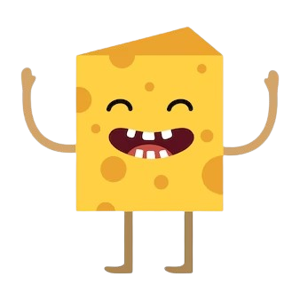

- What type of cheese is made backward? Edam.
- What did the cheese say to itself in the mirror? Hallou-mi!
- Why didn’t the cheese want to get sliced? It had grater plans.
- What do you call a monster made of cheese? Gorgonzilla
- Why was the cheddar so good at making decisions? Because it was sharp.
- What happened when the cheese factory exploded? There was nothing left but de-brie.
- What do you call a dinosaur made of cheese? Cheddarsaurus Rex.